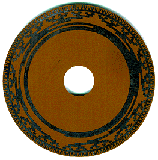

|
July 3, 1998
Life is full of mysteries. Some will reveal themselves in time or by chance. A few mysteries you will never know. I have found, in most cases, a mystery is something one just doesn't bother to find out. I am making a conscious effort to solve one mystery in my life which has been tickling my curiosity for years. What is the object below? The person who can give me the correct answer will have my eternal gratitude. You must be able to prove your answer or somehow I must be able to confirm it. More detailed specifications of the mystery object are given below. UFO/Alien theories will be politely ignored.
General Description
I should also mention the object is a bit unusual as it was made at a time when the process of extracting aluminum was expensive. Also, the etchings were made without the benefit of computer aided design. We're talking 1960s technology folks! Home computers did not exist. Or hand calculators for that matter!
|
|||||||||||||||
|
 See Magnified Image (113K GIF) |
|
||||||||||||||
Last updated : April 30, 2001 Copyright 1998-2001 Al Wong, Los Angeles, California, USA |
|||||||||||||||
{kind=link}